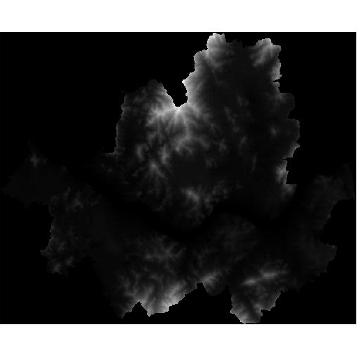
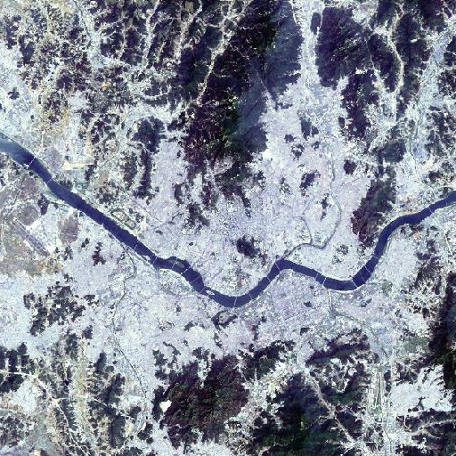
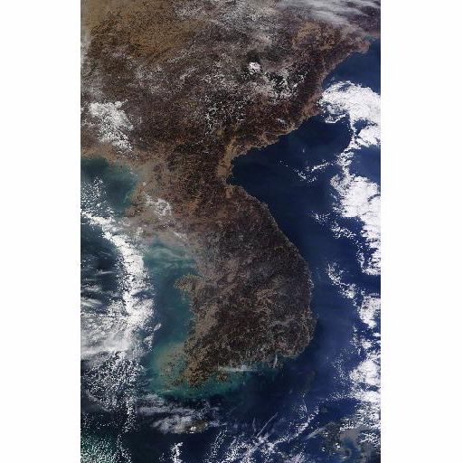
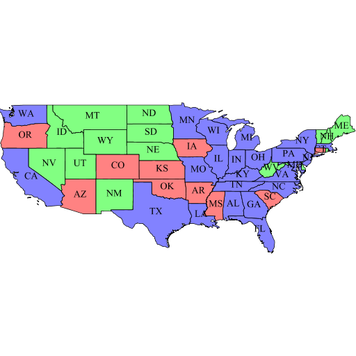
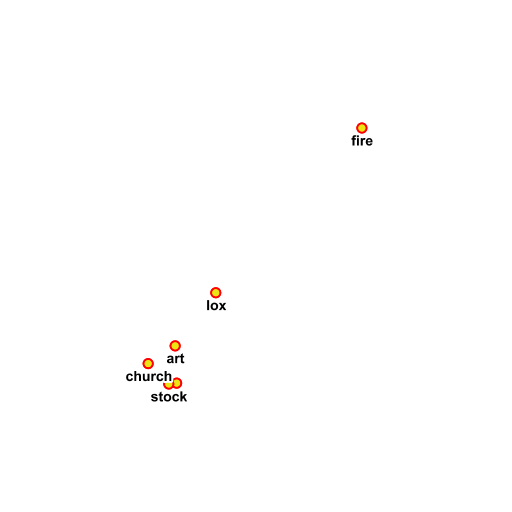
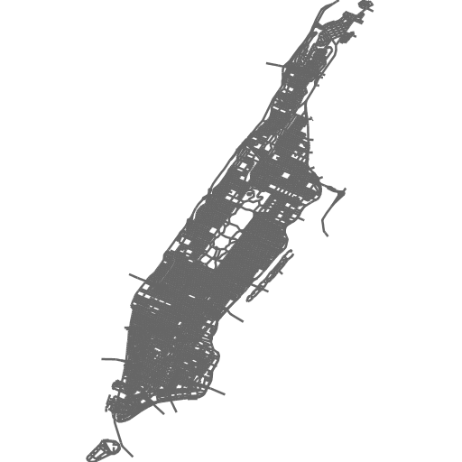

레이어 카탈로그
GeoServer에서 발행된 레이어의 카탈로그를 확인합니다.
|  | cite:dem30 | raster | - | |
| 126.763006,37.426033 ~ 127.183168,37.699299 | EPSG:2097 | GeoTIFF | ||
|  | cite:landsat | raster | 2592000 | |
| 126.745775,37.356210 ~ 127.349321,37.742742 | EPSG:2097 | GeoTIFF | ||
|  | cite:nasa-worldview-2014-11-19 | raster | 15552000 | |
| 123.922851,32.544799 ~ 131.059570,43.550903 | EPSG:4326 | GeoTIFF | ||
|  | topp:states | population | 3600 | |
| -124.731422,24.955967 ~ -66.969849,49.371735 | EPSG:4326 | Shape | ||
|  | tiger:poi | poi | 3600 | |
| -74.011831,40.707546 ~ -74.008573,40.711945 | EPSG:4326 | Shape | ||
|  | tiger:tiger_roads | tiger_roads | 3600 | |
| -74.02722,40.684221 ~ -73.907005,40.878178 | EPSG:4326 | Shape |